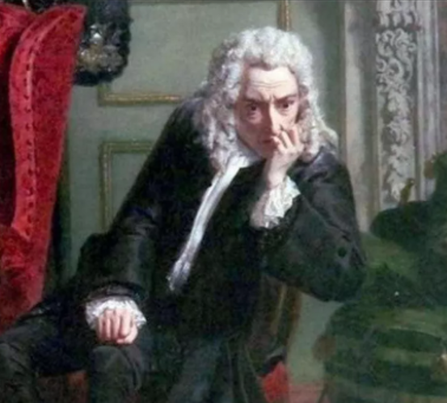

My Hobbies
Reading
I enjoy reading fiction, fantasy, and philosophy, it allows me to learn new perspectives and concepts. I am fascinated by people’s experiences, their lessons and stories. I love exploring different thoughts and ideas.
- Areas of Interest: Fiction, Fantasy, Philosophy
- Purpose: Expanding knowledge and understanding diverse perspectives

“Life and living & living for what reason and in what situation; with many different variables; coincidental, purposely, mistakenly; we maybe realize we are the problem and we are the solution” – Fyodor Dostoyevsky
Painting
I love art, especially painting. It helps me become more observant of small details around me and gives me an artistic lens to appreciate the world’s beauty.
- Mediums: Oil Paint, Gouache, Mixed Media
- Purpose: Developing creativity and expressing ideas visually